소방설비산업기사(기계) (2017-03-05 기출문제)
1과목: 소방원론
1. 일반적인 화재에서 연소 불꽃 온도가 1500℃이었을 때의 연소 불꽃의 색상은?
- 휘백색
- 적색
- 휘적색
- 암적색
(정답률: 86%)

2. 인화점이 가장 낮은 것은?
- 경유
- 메틸알코올
- 이황화탄소
- 등유
(정답률: 76%)
3. 실내온도 15℃에서 화재가 발생하여 900℃가 되었다면 기체의 부피는 약 몇 배로 팽창되는가?
- 2.23
- 4.07
- 6.45
- 8.⑤
(정답률: 70%)
4. 숯, 코크스가 연소하는 형태에 해당하는 것은?
- 분무연소
- 예혼합연소
- 표면연소
- 분해연소
(정답률: 84%)
5. 열의 전달 형태가 아닌 것은?
- 대류
- 산화
- 전도
- 복사
(정답률: 87%)
6. 건축물 화재 시 계단실 내 연기의 수직 이동속도는 약 몇 m/s 인가?
- 0.5~1
- 1~2
- 3~5
- 10~15
(정답률: 71%)
7. 수소의 공기 중 폭발한계는 약 몇 vol% 인가?
- 12.5~74
- 4~75
- 3~12.4
- 2.5~81
(정답률: 72%)
8. 피난대책의 일반적인 원칙으로 틀린 것은?
- 피난경로는 간단 명료하게 한다.
- 피난설비는 고정식 설비보다 이동식 설비를 위주로 설치한다.
- 피난수단은 원시적 방법에 의한 것을 원칙으로 한다.
- 2방향 피난통로를 확보한다.
(정답률: 84%)
9. 다음 물질 중 자연발화의 위험성이 가장 낮은 것은?
- 석탄
- 팽창질석
- 셀룰로이드
- 퇴비
(정답률: 66%)
10. 액체 위험물 화재 시 물을 방사하게 되면 교란시켜 탱크 밖으로 밀어 올리거나 비산시키는 현상은?
- 열파(thermal wave)현상
- 슬롭 오버(slop over)현상
- 화이어 볼(fire ball)현상
- 보일오버(boil over)현상
(정답률: 67%)
11. 수소 1kg 이 완전연소할 때 필요한 산소는 몇 kg 인가?
- 4
- 8
- 16
- 3
(정답률: 50%)
12. 다음 중 발화점(℃)이 가장 낮은 물질은?
- 아세틸렌
- 메탄
- 프로판
- 이황화탄소
(정답률: 57%)
13. 내화건축물과 비교한 목조건축물 화재의 일반적인 특징은?
- 고온 단기형
- 저온 단기형
- 고온 장기형
- 저온 장기형
(정답률: 82%)
14. 제3종 분말소화약제의 주성분으로 옳은 것은?
- 탄산수소나트륨
- 제1인산암모늄
- 탄산수소칼륨
- 탄산수소칼륨과 요소
(정답률: 85%)
15. 상온∙상압상태에서 기체로 존재하는 화합물로만 연결된 것은?
- Halon 2402, Halon 1211
- Halon 1211, Halon 1011
- Halon 1301, Halon 1011
- Halon 1301, Halon 1211
(정답률: 64%)
16. 건축물의 주요구조부에 해당하는 것은?
- 내력벽
- 작은 보
- 옥외계단
- 사이 기둥
(정답률: 80%)
17. 위험물의 유별에 따른 대표적인 성질의 연결이 틀린 것은?
- 제1류 - 산화성고체
- 제2류 - 가연성고체
- 제4류 - 인화성액체
- 제5류 - 산화성액체
(정답률: 83%)
18. 분말소화약제의 열분해 반응식 중 다음 ( )안에 알맞은 것은?
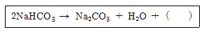
- Na
- Na2
- CO
- CO2
(정답률: 81%)
19. 동식물유류에서 “요오드값이 크다” 라는 의미로 옳은 것은?
- 불포화도가 높다.
- 불건성유이다.
- 자연발화성이 낮다.
- 산소와 결합이 어렵다.
(정답률: 72%)
20. 황린과 적린이 서로 동소체라는 것을 증명하는 가장 효과적인 실험은?
- 비중을 비교한다.
- 착화점을 비교한다.
- 유기용제에 대한 용해도를 비교한다.
- 연소생성물을 확인한다.
(정답률: 71%)
2과목: 소방유체역학
21. 안지름 1000mm의 원통형 수조에 들어있는 물을 안지름 150mm인 관을 통해 평균유속 3m/s로 배출한다. 이 때 수조 내 수면의 강하속도는 약 몇 cm/s 인가?
- 3.24
- 1.423
- 6.75
- 14.13
(정답률: 42%)
22. 그림과 같이 개방된 물탱크의 수면까지 수직으로 살짝 잠긴 반지름 a인 원형 평판을 b만큼 밀어 넣었더니 한쪽 면이 압력에 의해 받는 힘이 50% 늘어났다. 대기압의 영향을 무시 한다면 b/a는?
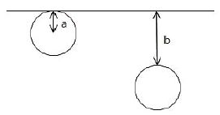
- 0.2
- 0.5
- 1
- 2
(정답률: 61%)
23. 관내 유동에서 해당 유체가 완전발달 층류유동을 할 때 관마찰계수는?
- 레이놀즈수와 관의 상대조도에 관계된다.
- 마하수와 레이놀즈수에 관계된다.
- 관의 길이와 지름 및 레이놀즈수에 관계된다.
- 레이놀즈수에만 관계된다.
(정답률: 57%)
24. 유량계수가 0.94인 방수노즐로부터 방수압력(계기압력) 255kPa로 물을 방사할 때 방수량을 측정한 결과 0.1m3/min 이었다면 사용한 노즐의 구경은 약 몇 mm인가?
- 10
- 12
- 14
- 16
(정답률: 37%)
25. 이상기체의 내부에너지에 대한 설명 중 옳은 것은?
- 내부에너지는 압력과 온도의 함수이다.
- 내부에너지는 압력만의 함수이다.
- 내부에너지는 체적과 압력의 함수이다.
- 내부에너지는 온도만의 함수이다.
(정답률: 46%)
26. 20℃, 2kg의 공기가 온도의 변화 없이 팽창하여 그 체적이 2배로 되었을 때 이 시스템이 외부에 한 일은 약 몇 KJ 인가? (단, 공기의 기체상수는 0.287KJ/(kg∙K) 이다.)
- 85.63
- 102.85
- 116.63
- 125.71
(정답률: 36%)
27. 물속에 지름 4mm의 유리관을 삽입할 때, 모세관에 의한 상승높이는 약 몇 mm인가? (단, 물과 유리관의 접촉각은 0°이고, 물의 표면장력은 0.0742N/m이다.)
- 4.1
- 5.3
- 6.7
- 7.6
(정답률: 43%)
28. 그림과 같이 물 제트가 정지하고 있는 사각판의 중앙부분에 직각방향으로 부딪히도록 분사하고 있다. 이 때 분사속도(V1)를 점차 증가시켰더니 2m/s의 속도가 될 때 사각판이 넘어졌다면, 이 판은 질량은 약 몇 kg인가? (단, 제트의 단면적은 0.01m2이다.)(오류 신고가 접수된 문제입니다. 반드시 정답과 해설을 확인하시기 바랍니다.)
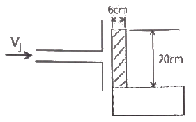
- 4.1 kg
- 13.6 kg
- 16.4 kg
- 40.0 kg
(정답률: 44%)
29. 비중이 0.7인 물체를 물에 띄우면 전체 체적의 몇 %가 물속에 잠기는가?
- 30%
- 49%
- 70%
- 100%
(정답률: 74%)
30. 비점성 유체를 가장 옳게 설명한 것은?
- 실제 유체를 뜻한다.
- 전단응력이 존재하는 유체흐름을 뜻한다.
- 유체 유동 시 마찰저항이 존재하는 유체이다.
- 유체 유동 시 마찰저항이 유발되지 않는 이상적인 유체를 말한다.
(정답률: 77%)
31. 다음 중 무차원이 아닌 것은?
- 기체상수
- 레이놀즈수
- 항력계수
- 비중
(정답률: 51%)
32. 어떤 펌프를 전양정 50m, 유량 1.5m3/min 로 운전하기 위해 가해주는 동력이 15kW 라면 이 펌프의 효율은 약 몇 % 인가?
- 72.6
- 75.4
- 78.8
- 81.7
(정답률: 52%)
33. 그림과 같이 수조측면에 구멍이 나있다. 이 구멍을 통하여 흐르는 유속은 약 몇 m/s인가?
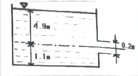
- 6.9
- 3.09
- 9.8
- 13.8
(정답률: 54%)
34. 텅스텐, 백금 또는 백금-이리듐 등을 전기적으로 가열하고 통과 풍량에 따른 열 교환양으로 속도를 측정하는 것은?
- 열선 풍속계
- 도플러 풍속계
- 컵형 풍속계
- 포토디텍터 풍속계
(정답률: 68%)
35. 그림에서 h1=300mm, h2=150mm, h3=350mm 일 때 A와 B의 압력차(pA-pB)는 약 몇 kPa인가? (단, A,B의 액체는 물이고, 그 사이의 액주계 유체는 비중이 13.6인 수은이다.)
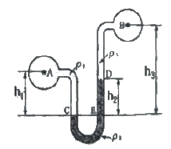
- 15
- 17
- 19
- 21
(정답률: 45%)
36. 지름 4cm인 관에 동점성계수 5×10-2cm2/s인 유체가 평균 속도 2m/s로 흐르고 있을 때 레이놀즈수는 얼마인가?
- 14000
- 16000
- 18000
- 20000
(정답률: 64%)
37. 임펠러의 지름이 같은 원심식 송풍기에서 회전수만 변화시킬 때 동력변화를 구하는 식으로 옳은 것은? (단, 변화 전∙후의 회전수를 N1,N2 변화 전∙후의 동력을 L1, L2로 표시한다.)
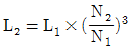
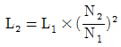
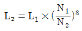
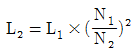
(정답률: 53%)
38. 표준 대기압 상태에서 15℃의 물 2kg을 모두 기체로 증발시키고자 할 때 필요한 에너지는 약 몇 KJ인가? (단, 물의 비열은 4.2KJ/(kg∙K), 기화열은 2256KJ/kg이다.)
- 355
- 1248
- 2256
- 5226
(정답률: 51%)
39. 그림과 같이 안쪽원의 지름이 D1, 바깥쪽의 원의 지름이 D2인 두 개의 동심원 사이에 유체가 흐르고 있다. 이 유동 단면의 수력지름(hydraulic diameter) 을 구하면?
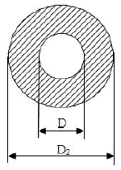
- D2+D1
- D2-D1
- π(D2+D1)
- π(D2-D1)
(정답률: 52%)
40. 완전 흑체로 가정한 흑연의 표면 온도가 450℃이다. 단위면적당 방출되는 복사에너지 유속은 약 몇 kW/m2인가? (단. 흑체의 Stefan-Boltzmann 상수는 σ=5.67×10-8W/m2∙K4)
- 2.33
- 15.5
- 21.4
- 232.5
(정답률: 45%)
3과목: 소방관계법규
41. 단독경보형감지기를 설치해야 하는 특정소방 대상물의 기준으로 틀린 것은?
- 연면적 800m2미만의 숙박시설
- 연면적 1000m2미만의 아파트등
- 연면적 1000m2미만의 기숙사
- 수련시설 내에 있는 연면적 2000m2미만의 기숙사
(정답률: 54%)
42. 화재안전기준을 달리 적용하여야 하는 특수한 용도 또는 구조를 가진 특정소방대상물 중 원자력발전소, 핵폐기물처리시설에 설치하지 아니할 수 있는 소방시설로 옳은 것은?
- 옥내소화전설비 및 소화용수설비
- 연결송수관설비 및 연결살수설비
- 옥내소화전설비 및 옥외소화전설비
- 스프링클러설비 및 물분무등소화설비
(정답률: 67%)
43. 제조소등의 지위승계 및 폐지에 관한 설명 중 다음 ( )안에 알맞은 것은?
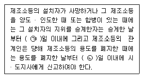
- ㉠ 14, ㉡ 14
- ㉠ 14, ㉡ 30
- ㉠ 30, ㉡ 14
- ㉠ 30, ㉡ 30
(정답률: 59%)
44. 위험물을 취급하는 건축물 그 밖의 시설 주위에 보유해야 하는 공지의 너비를 정하는 기준이 되는 것은? (단, 위험물을 이송하기 위한 배관 그밖에 이와 유사한 시설을 제외한다.)(오류 신고가 접수된 문제입니다. 반드시 정답과 해설을 확인하시기 바랍니다.)
- 위험물안전관리자의 보유 기술자격
- 위험물의 품명
- 취급하는 위험물의 최대수량
- 위험물의 성질
(정답률: 65%)
45. 소방기본법령상 화재피해조사 중 재산피해 조사의 조사범위가 아닌 것은?
- 열에 의한 탄화, 용융, 파손 등의 피해
- 연기, 물품반출, 화재로 인한 폭발 등에 의한 피해
- 소방시설의 사용 또는 작동 등의 상황
- 소화활동 중 사용된 물로 인한 피해
(정답률: 61%)
46. 소방시설공사 현장에 감리원을 배치하지 아니한 자의 벌칙 기준은?
- 100만원 이하의 벌금
- 300만원 이하의 벌금
- 500만원 이하의 벌금
- 1000만원 이하의 벌금
(정답률: 66%)
47. 소방기본법상 최대 200만원 이하의 과태료 처분 대상이 아닌 것은?
- 화재, 재난∙재해, 그 밖의 위급한 상황이 발생한 구역에 소방본부장의 피난 명령을 위반한 사람
- 소방활동구역을 대통령으로 정하는 사람외에 출입한 사람
- 화재 또는 구조∙구급이 필요한 상황을 소방서에 거짓으로 알린 사람
- 대통령령으로 정하는 특수가연물의 저장 및 취급 기준을 위반한 자
(정답률: 33%)
48. 수용인원 산정방법 중 침대가 없는 숙박시설로서 해당 특정소방대상물의 종사자의 수는 5명, 복도, 계단 및 화장실의 바닥면적을 제외한 바닥면적이 158m2인 경우의 수용인원은?
- 84명
- 58명
- 45명
- 37명
(정답률: 62%)
49. 특정소방대상물의 의료시설 중 병원에 해당하는 것은?
- 마약진료소
- 장례식장
- 전염병원
- 요양병원
(정답률: 63%)
50. 위험물안전관리법령상 위험물 유별에 따른 성질의 분류 중 자기반응성 물질은?
- 황린
- 염소산염류
- 알칼리토금속
- 질산에스테르류
(정답률: 59%)
51. 소방시설공사업법상 소방시설공사 결과 소방시설의 하자 발생 시 통보를 받은 공사업자는 며칠 이내에 하자를 보수해야 하는가?
- 3
- 5
- 7
- 10
(정답률: 62%)
52. 위험물안전관리법상 위험물의 정의 중 다음 ( )안에 알맞은 것은?
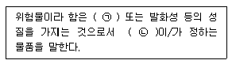
- ㉠ 인화성, ㉡ 대통령령
- ㉠ 휘발성, ㉡ 국무총리령
- ㉠ 인화성, ㉡ 국무총리령
- ㉠ 휘발성, ㉡ 대통령령
(정답률: 80%)
53. 소방시설 중 경보설비에 해당하지 않는 것은?
- 비상벨설비
- 단독경보형 감지기
- 비상방송설비
- 비상콘센트설비
(정답률: 79%)
54. 국가가 시∙도의 소방업무에 필요한 경비의 일부를 보조하는 국고보조 대상이 아닌 것은?
- 소방용수시설
- 소방전용통신시설
- 소방자동차
- 소방관서용 청사의 건축
(정답률: 66%)
55. 제조소등에 전기설비(전기배선, 조명기구 등은 제외)가 설치된 장소의 면적이 250m2라면, 설치해야 할 소형 수동식소화기의 최소개수는?
- 1개
- 2개
- 3개
- 4개
(정답률: 58%)
56. 소방시설공사업법령상 소방공사감리를 실시함에 있어 용도와 구조에서 특별히 안전성과 보안성이 요구되는 소방대상물로서 소방시설물에 대한 감리는 감리업자 아닌 자가 감리를 할 수 있는 장소는?
- 교도소 등 교정관련시설
- 국방 관계시설 설치장소
- 정보기관의 청사
- 원자력안전법상 관계시설이 설치되는 장소
(정답률: 60%)
57. 하자보수대상 소방시설 중 하자보수 보증기간이 3년인 것은?
- 유도등
- 피난기구
- 비상방송설비
- 간이스프링클러설비
(정답률: 68%)
58. 소방시설관리업자가 기술인력을 변경 시 시∙도지사에게 첨부하여 제출하는 서류가 아닌 것은?
- 소방시설관리업 등록수첩
- 변경된 기술인력의 기술자격증(자격수첩)
- 기술인력 연명부
- 사업자등록증 사본
(정답률: 63%)
59. 제조 또는 가공 공정에서 방염처리를 한 물품으로서 방염대상물품이 아닌 것은? (단, 합판∙목재류의 경우에는 설치 현장에서 방염처리를 한 것을 포함한다.)
- 카펫
- 창문에 설치하는 커튼류
- 두께가 2mm 미만인 종이벽지
- 전시용 합판 또는 섬유판
(정답률: 76%)
60. 특정소방대상물 중 근린생활시설에 해당되는 것은? (단, 같은 건축물에 해당 용도로 쓰는 바닥면적의 합계이다.)
- 바닥면적의 합계가 1500m2인 슈퍼마켓
- 바닥면적의 합계가 1200m2인 자동차영업소
- 바닥면적의 합계가 450m2인 골프연습장
- 바닥면적의 합계가 400m2인 영화상영관
(정답률: 53%)
4과목: 소방기계시설의 구조 및 원리
61. 수화수조, 저수조의 채수구 또는 흡수관 투입구는 소방차가 몇 m이내의 지점까지 접근할 수 있는 위치에 설치하여야 하는가?
- 2
- 3
- 4
- 5
(정답률: 70%)
62. 분말소화약제 저장용기의 내부압력이 설정압력으로 되었을 때 정압작동장치에 의해 개방되는 밸브는?
- 주밸브
- 클리닝밸브
- 니들밸브
- 기동용기밸브
(정답률: 69%)
63. 제연구역 구회기준 중 제연경계의 폭과 수직거리 기준으로 옳은 것은? (단, 구조상 불가피한 경우는 제외한다.)
- 폭 : 0.3m 이상, 수직거리 : 0.6m 이내
- 폭 : 0.6m 이내, 수직거리 : 2m 이상
- 폭 : 0.6m 이상, 수직거리 : 2m 이내
- 폭 : 2m 이상, 수직거리 : 0.6m 이내
(정답률: 70%)
64. 대형소화기에 충전하는 소화약제량의 최소기준으로 틀린 것은?
- 물소화기 : 80L 이상
- 이산화탄소소화기 : 50kg 이상
- 할로겐 화물소화기 : 30kg 이상
- 강화액소화기 : 20L 이상
(정답률: 70%)
65. 특별피난계단의 계단실 및 부속실 제연설비의 차압 등에 관한 기준으로 틀린 것은?
- 제연구역과 옥내와의 사이에 유지해야 하는 최소차압은 40Pa 이상으로 해야 한다.
- 제연설비가 가동되었을 경우 출입문의 개방에 필요한 힘은 100N 이하로 해야 한다.
- 옥내에 스프링클러가 설치된 경우 제연구역과 옥내와의 사이에 유지해야 하는 최소차압은 12.5Pa 이상으로 해야 한다.
- 계단실과 부속실은 도시에 제연하는 경우 부속실의 기압은 계단실과 같게 하거나 계단실의 기압보다 낮게 할 경우에는 부속실과 계단실의 압력차이는 5Pa 이하가 되도록 해야 한다.
(정답률: 66%)
66. 장례식장을 제외한 의료시설 3층에 피난기구의 적응성이 없는 것은?
- 공기안전매트
- 구조대
- 승강식피난기
- 피난용 트랩
(정답률: 62%)
67. 분말소화약제 가압용가스용기의 설치기준 중 틀린 것은?(오류 신고가 접수된 문제입니다. 반드시 정답과 해설을 확인하시기 바랍니다.)
- 분말소화약제의 가압용가스 용기를 7병이상 설치한 경우에는 2개 이상의 용기에 전자개방 밸브를 부착할 것
- 분말소화약제의 가압용가스 용기에는 2.5MPa 이하의 압력에서 조정이 가능한 압력조정기를 설치할 것
- 가압용가스에 질소가스를 사용하는 것의 질소가스는 소화약제 1kg에 대하여 40ℓ 이상, 이산화탄소를 사용하는 것의 이산화탄소는 소화약제 1kg 대하여 20g에 배관의 청소에 필요한 양을 가산한 양 이상으로 할 것
- 축압용가스에 질소가스를 사용하는 것의 질소가스는 소화약제 1kg에 대하여 10L이상, 이산화탄소를 사용하는 것의 이산화탄소는 소화약제 1kg에 대하여 20g에 배관의 청소레 필요한 양을 가산한 양 이상으로 할 것
(정답률: 50%)
68. 인명구조기구의 종류가 아닌 것은?
- 방열복
- 공기호흡기
- 인공소생기
- 자동 제세동기
(정답률: 60%)
69. 연결송수관설비 방수구의 설치기준 중 다음 ( )안에 알맞은 것은? (단, 집회장∙관람장∙백화점∙도매시장∙소매시장∙판매시설∙공장∙창고시설 또는 지하가를 제외한다.)
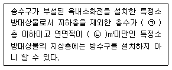
- ㉠ 4, ㉡ 6000
- ㉠ 5, ㉡ 3000
- ㉠ 4, ㉡ 3000
- ㉠ 5, ㉡ 6000
(정답률: 49%)
70. 청정소화약제의 최대허용설계농도(%)기준으로 옳은 것은?
- HFC-125 : 9%
- IG-541 : 50%
- FC-3-1-10 : 43%
- HCFC-124 : 1%
(정답률: 47%)
71. 상수도직결형 간이스프링클러설비의 배관 및 밸브 등의 설치순서로 옳은 것은?
- 수도용계량기-급수차단장치-개폐표시형밸브-체크밸브-압력계-유수검지장치-2개의 시험밸브 순으로 설치
- 수도용계량기-급수차단장치-개폐표시형밸브-압력계-체크밸브-유수검지장치-2개의 시험밸브 순으로 설치
- 수도용계량기-개폐표시형밸브-압력계-체크밸브-압력계-개폐표시형밸브 순으로 설치
- 수도용계량기-개폐표시형밸브-압력계-체크밸브-압력계-개폐표시형밸브-일제개방밸브 순으로 설치
(정답률: 48%)
72. 호스릴포소화설비 또는 포소화전설비를 설치할 수 있는 차고∙주차장의 부분이 아닌 것은?
- 지상1층으로서 방화구획 되거나 지붕이 없는 부분
- 완전 개방된 옥상주차장 또는 고가 밑의 주차장 등으로서 주된 벽이 없고 기둥뿐이거나 주위가 위해방지용 철주 등으로 둘러쌓인 부분
- 옥외로 통하는 개구부가 상시 개방된 구조의 부분으로서 그 개방된 부분의 합계 면적이 해당 차고 또는 주차장의 바닥면적이 15% 이상인 부분
- 지상에서 수동 또는 원격조작에 따라 개방이 가능한 개구부의 유효면적의 합계가 바닥면적의 10% 이상인 부분
(정답률: 48%)
73. 물분무소화설비를 설치하는 차고 또는 주차장의 배수설비, 설치기준으로 옳은 것은?
- 차량이 주차하는 바닥은 배수구를 향하여 100분의1이상이 경사를 유지할 것
- 차량이 주차하는 장소의 적당한 곳에 높이 5cm 이상의 경계턱으로 배수구를 설치할 것
- 배수설비는 가압송수장치 최대송수능력의 수량을 유효하게 배수할 수 있는 크기 및 기울기로 할 것
- 배수구에는 새어나온 기름을 모아 소화할 수 있도록 길이 50m 이하마다 집수관∙소화핏트 등 기름분리장치를 설치할 것
(정답률: 66%)
74. 스프링클러설비의 배관 중 수직배수관의 구경은 최소 몇 mm 이상으로 하여야 하는가? (단, 수직배관의 구경이 50mm 미만인 경우는 제외한다.)
- 40
- 45
- 50
- 60
(정답률: 50%)
75. 폐쇄형 스프링클러헤드를 사용하는 경우 포소화설비 자동식 기동장치의 설치 기준으로 틀린 것은? (단, 자동화재탐지설비의 수신기가 설치된 장소에 상시 사람이 근무하고 있고 화재 시 즉시 해당 조작부를 작동시킬 수 있는 경우는 제외한다.)
- 하나의 감지장치 경계구역은 하나의 층이 되도록 할 것
- 폐쇄형 스프링클러헤드는 표시온도가 79℃이상 121℃미만인 것을 사용할 것
- 폐쇄형 스프링클러헤드 1개의 경계면적은 20m2 이하로 할 것
- 부착면의 높이는 바닥으로부터 5m 이하로 하고, 화재를 유효하게 감지할 수 있도록 할 것
(정답률: 41%)
76. 옥외소화전이 31개 이상 설치된 경우 옥외소화전 몇 개마다 1개 이상의 소화전함을 설치하여야 하는가?
- 3
- 5
- 9
- 11
(정답률: 62%)
77. 소화기구의 설치기준 중 다음 ( )안에 알맞은 것은?
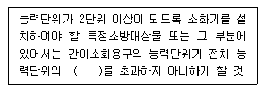
- 1/2
- 1/3
- 1/4
- 1/5
(정답률: 62%)
78. 이산화탄소 소화설비 배관의 설치기준 중 다음 ( )안에 알맞은 것은?
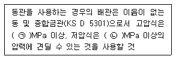
- ㉠16.5, ㉡3.75
- ㉠25, ㉡3.5
- ㉠16.5, ㉡2.5
- ㉠25, ㉡3.75
(정답률: 52%)
79. 물분무소화설비의 물분무헤드를 설치하지 아니할 수 있는 장소가 아닌 것은?
- 식물원∙수족관∙목욕실∙관람석 부분을 제외한 수영장 또는 그 밖의 이와 비슷한 장소
- 물에 심하게 반응하는 물질 또는 물과 반응하여 위험한 물질을 생성하는 물질을 저장 또는 취급하는 장소
- 고온의 물질 및 증류범위가 넓어 끓어 넘치는 위험이 있는 물질을 저장 또는 취급하는 장소
- 운전 시에 표면의 온도가 260℃ 이상으로 되는 등 직접 분무를 하는 경우 그 부분에 손상을 입힐 우려가 있는 기계장치 등이 있는 장소
(정답률: 58%)
80. 화재조기진압용 스프링클러설비 헤드 하나의 최소 방호면적은 몇 m2 이상이어야 하는가?
- 4.3
- 6
- 7.2
- 9.3
(정답률: 50%)